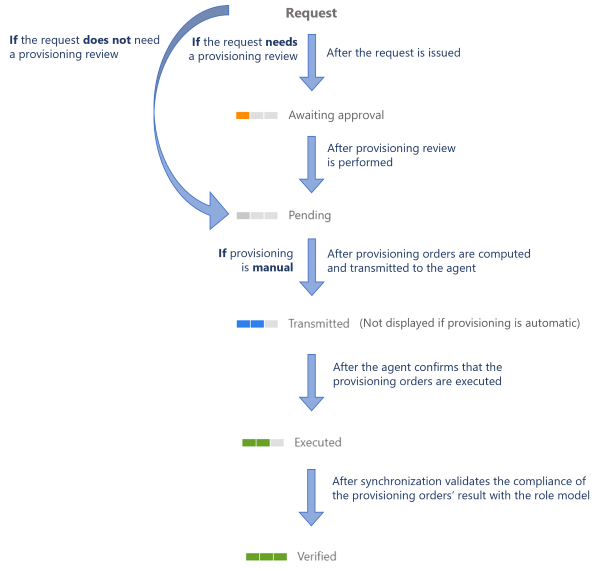
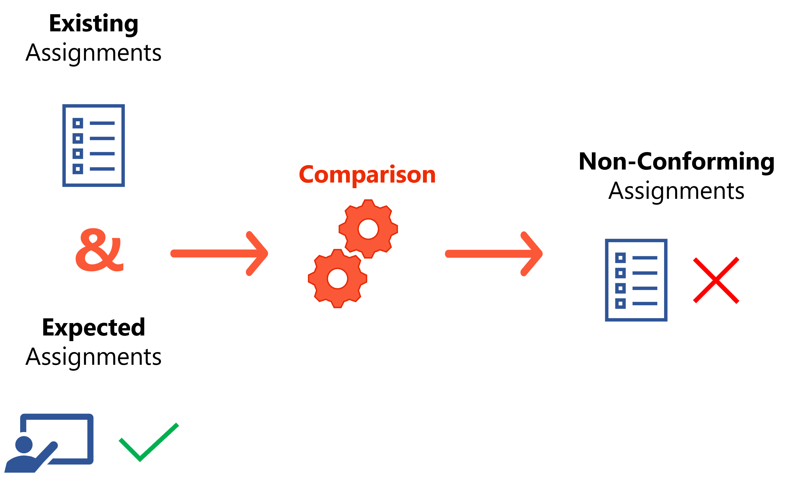

Entitlement Assignment
Assigning entitlements means giving users specific permissions, or access rights, etc.
Overview
As Identity Manager relies on a role-based assignment policy, entitlement assignment is simply role assignment. See the Role Model topic for additional information.
So once a user is assigned a role, Identity Manager must make the right changes in the managed system(s) to actually enable the corresponding permission. The values to be changed in the managed systems are specified in provisioning orders.
Hence, an entitlement assignment is both the result of the execution of a provisioning order, and the enablement of an access right.
Automatic vs. Manual
Within Identity Manager, assignments can be created automatically, or can result from manual requests.
Automatic assignments are created by Identity Manager when evaluating the policy, i.e. when computing expected assignments based on existing users and the policy's roles and rules. See the Evaluate Policy topic for additional information. Automatic assignments can:
- Result directly from the application of assignment rules on identities. See the Assignment Policy topic for additional information.
- Be inferred and cascading from another assignment.
Manual assignments and degradations are on the other hand, need to be requested individually through the UI.
Assignments' Approval Workflow
Some entitlements require the approval of one or several knowledgeable users before actually being assigned. This is standard procedure in many security-concerned organizations.
NOTE: This is configurable through the role's or resource type's approval workflow type. See the Single Role topic for additional information.
Each step of the approval workflow is associated with a workflow state, so that all assignments can be tracked and it is clear what step they are at.
The same approval workflow is used for requests to add or remove roles.
For example, Ms. Jackson requests for Mr. Smith the single role Server Room Access which has a two-step approval workflow:
- At the end of the workflow, the assigned role has the workflow state Requested.
- Once the assignment is processed, the workflow state switches to Pending Approval 1/2.
- Once a reviewer approves the assignment, the state switches to Pending Approval 2/2 (and if the reviewer declined the assignment, the state would switch to Declined).
- Once a second reviewer approves the assignment, the stat switches to Approved and the assignment is finally effective.
Provisioning state
In addition to the workflow state that represents an assignment's progress in the approval workflow, any assignment also has a provisioning state to represent its progress in its lifetime from creation in the database to provisioning to the managed system and to its eventual deletion.
NOTE: Contrary to the workflow state that concerns all assignments, the provisioning state is only about the assignments that need provisioning.
For example, roles exist only in Identity Manager and not in the managed systems, so assigned roles do not have a provisioning state, unlike assigned resource types, scalars and navigation, etc.

The schema sums up the usual progress of an assignment's provisioning state.
For example, once Mr. Smith's role has completed the approval steps, we expect the provisioning of a navigation property:
- It is not yet ready for provisioning because we decided to add a provisioning review by a knowledgeable user because it is a sensitive permission, so the assigned resource navigation has the Awaiting Approval provisioning state.
- Once a reviewer approves the assignment, the provisioning state switches to Pending.
- Once provisioning orders are computed and transmitted to the agent, the state switches to Transmitted.
- Once the agent confirms that the related order is executed, the state switches to Executed.
- Once synchronization validates the consistency of the provisioned value with the policy, the state finally switches to Verified.
Assignments whose provisioning orders are blocked because they are Awaiting Approval are to be reviewed on the Provisioning Review screen.
Non-Conforming Assignments
Once a policy is configured with all its rules and roles, Identity Manager can combine it with user information in order to determine the expected assignments, i.e. the list of all assignments that comply with the policy.
On the other hand, via synchronization Identity Manager can read the existing assignments, i.e. the list of all assignments that actually exist in the managed systems.
Technically speaking, Identity Manager creates entitlements in the managed systems, and "translates" them into role model language. In other words, Identity Manager create assignments based on the entitlements found in the systems.
A simple comparison between these two lists defines the non-conforming assignments, i.e. the list of all assignments that do not comply with the policy.

A non-conforming assignment must be reviewed in Identity Manager by a knowledgeable user, and is therefore:
- Removed if Identity Manager correctly spotted it and the owner should indeed not possess this permission;
- Kept as an exception if the configured rules do not apply to this particular case.
NOTE: Non-conforming assignments are to be reviewed on the Role Reconciliation and/or Resource Reconciliation screens. See the Evaluate Policy topic for additional information.
Non-conforming assignments can still be split into two categories:
- Pre-existing when they are found during the very first synchronization because they existed before Identity Manager's implementation;
- Simply non-conforming when they are found later.
For example, consider a (navigation) rule stating that the QuickBooks Level 1 Access role entitles its owner to the Active Directory QuickBooks group membership, that enables them to access the organization accounting balance information through QuickBooks.
Now, let's say synchronization finds the Active Directory QuickBooks group membership for Mr. Smith's Active Directory account. The trouble is, Mr. Smith digital identity has not bee assigned the QuickBooks Access role: this is an inconsistency.
In order to fix the inconsistency, Identity Manager creates the assignment of this role to Mr. Smith to be reviewed by a knowledgeable user who can determine whether the assignment is legitimate or results from a mistake.
Review automation
Identity Manager provides automation rules to automate the review of non-conforming assignments by automatically approving/declining assignments that were pending approval for some time, if this behavior is desired. See the Automate the Review of Non-conforming Assignments topic for additional information.
For example, the single role Server Room Access is requested for Mr. Smith, with a two-step approval workflow. Ms. Jackson is supposed to review it, and then Mr. Jones. If Ms. Jackson takes too long, an automation can approve it, or most likely decline it, automatically. This way, the approval process ends and will need to be restarted at a later date if the need is genuine.
Resource Type Assignments
Resource types are not as intuitive as roles because they are more complex and subtle. Assigning a resource type materializes:
- The creation of a resource, usually an account, in the managed system;
- The creation of scalar and navigation properties for this new resource;
- The categorization of the created resource, which means both the correlation of the resource to an owner, and the classification of the resource into a specific type with specific rules between owner and owned resources. See the Categorize Resources topic for additional information.
Reconciliation
Just like any other assignment, a resource type assignment can be non-confirming when the resource's existence or its values do not comply with the policy.
For example, a SAP account is found for a user who should not have one according to the role model's rules.
NOTE: An account can also be an orphan when it is found in the managed system, but no owner could be correlated.
Consolidated states
A resource type assignment also has consolidated workflow and provisioning states to represent the progress of the resource's scalar and navigation assignments.
Same as previously, the consolidated provisioning state represents the provisioning progress of the resource type assignment together with its nested scalar/navigation assignments.
The consolidated workflow state represents the provisioning progress of the resource type assignment together with its nested scalar/navigation assignments, and it is described by the following values:
- ConsolidatedWorkflowReviewState represents the progress in the approval workflow for a manual assignment;
NOTE: Except for very technical use cases, resource types should not be requested manually, they should only be inferred by a role and thus assigned automatically.
- ConsolidatedWorkflowBlockedState indicates whether one or more of the nested scalars/navigations are blocked;
- ConsolidatedWorkflowFoundState indicates whether one or more of the nested scalars/navigations are stated as non-conforming or pre-existing.